Mule Deer Dr
Deer statue on Mule Deer Dr
A standing deer statue with a full rack of antlers sits on a rock outcrop among ponderosa pine on Mule Deer Dr.
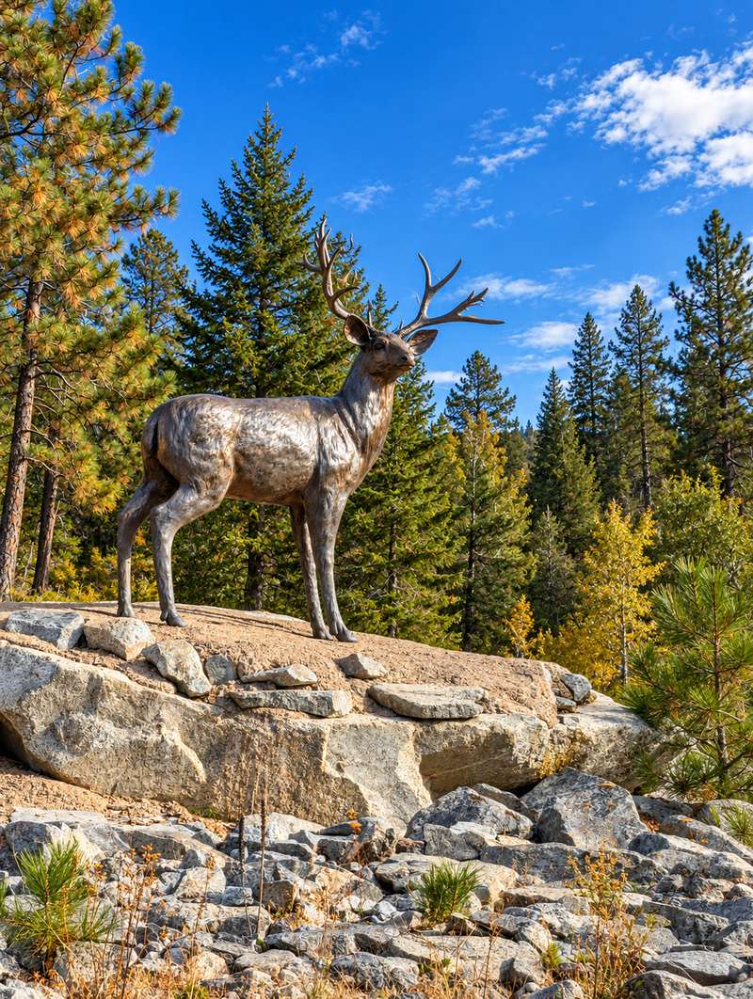
Cougar Pl
Cougar statue on Cougar Pl
A cougar statue stands on a rock beside the Cougar Pl street sign, surrounded by pine, aspen and dry grass.
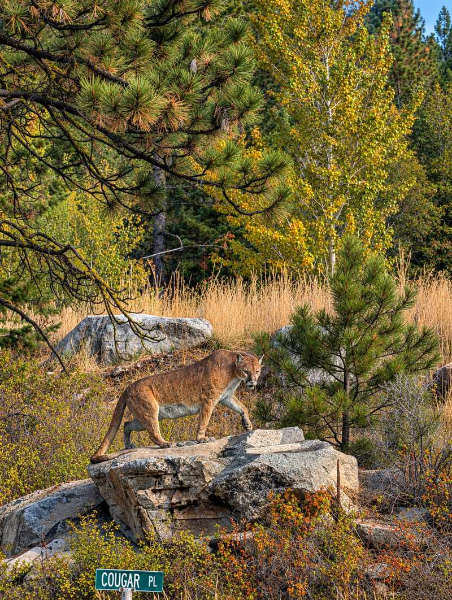
Peregrine Dr
Regal Ridge entrance and eagle statue on Peregrine Dr
The Regal Ridge entrance on Peregrine Dr is marked by a stacked-rock monument topped with an eagle statue, with stone-faced walls on either side of the road.
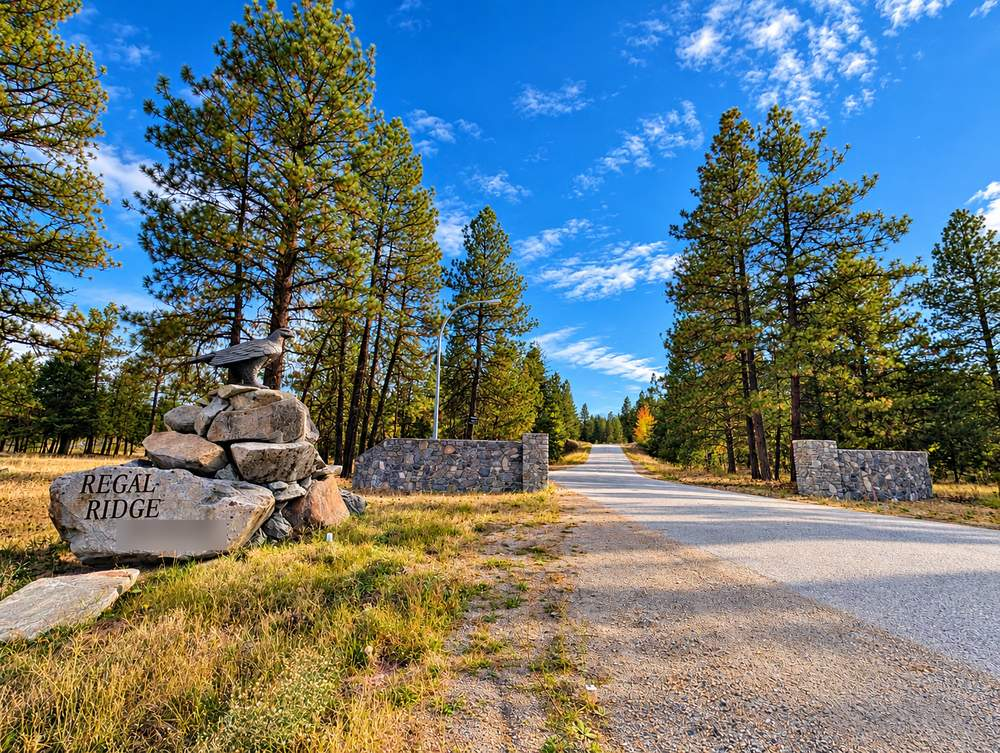
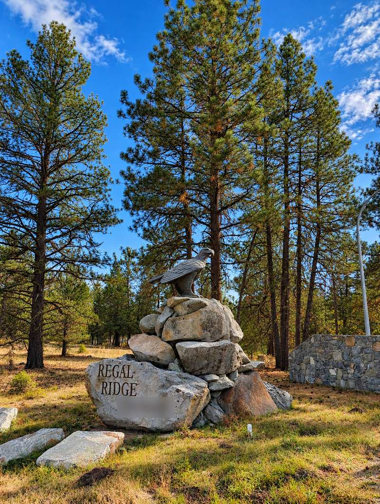
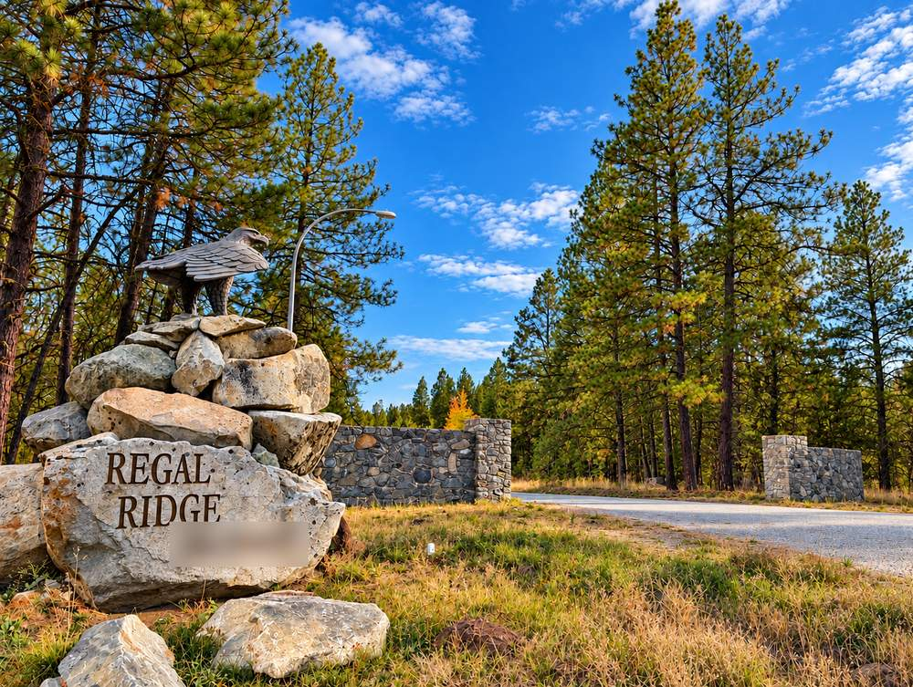
Black Tail Rd
Leaping buck statue on Black Tail Rd
A buck statue caught mid-leap stands on a flat rock above the road on Black Tail Rd.
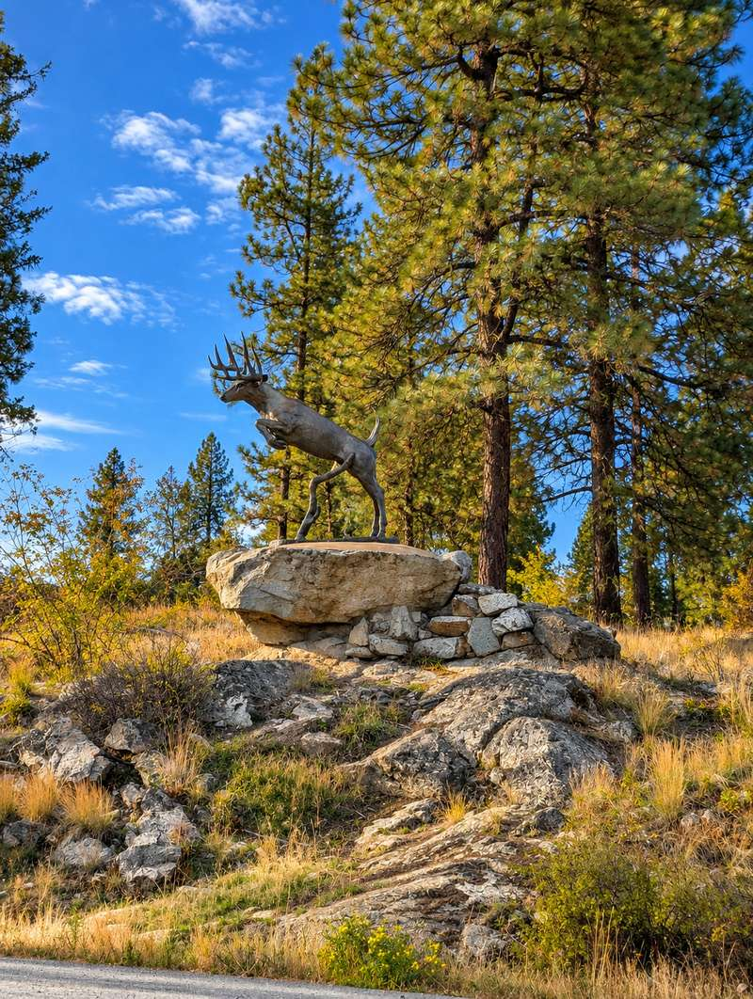
Sasquatch Trail
Sasquatch statue on Sasquatch Trail
A sasquatch statue stands on a stacked-rock wall on Sasquatch Trail, set against a pine-covered slope.
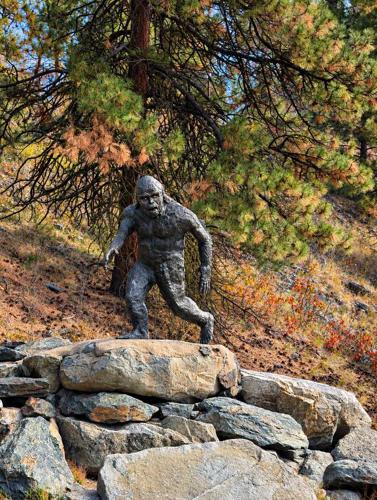
Eagle Point
Eagle statue at Eagle Point
An eagle statue with wings spread sits on a rock pile beside the road at Eagle Point.
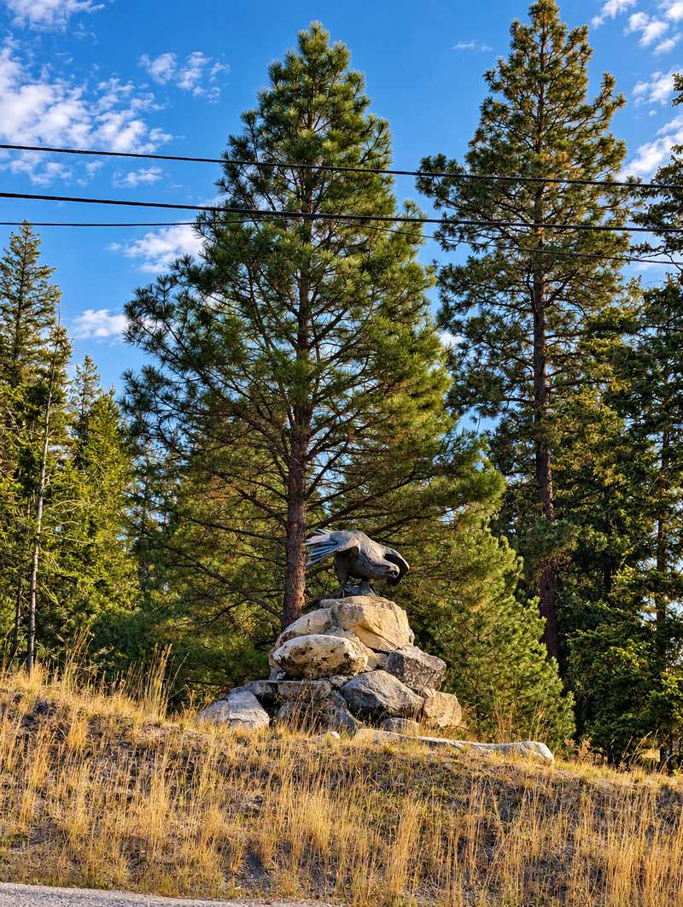
Bullmoose Rd
Moose statue on Bullmoose Rd
A bull moose statue rests on a rock pile on Bullmoose Rd.
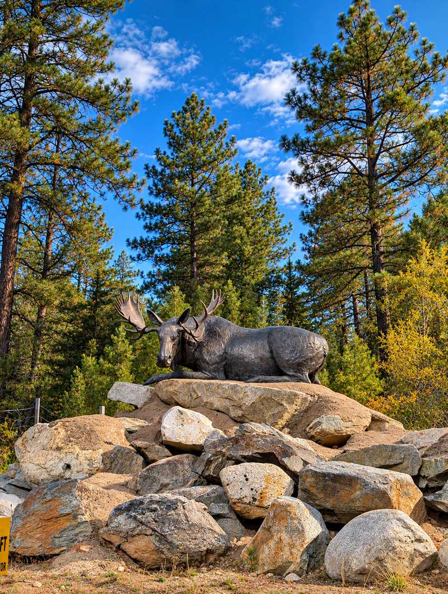
Caribou Crescent
Caribou statue on Caribou Crescent
A caribou statue in mid-stride stands on a rock outcrop in front of Caribou Crescent, with pine forest and open grass behind it.
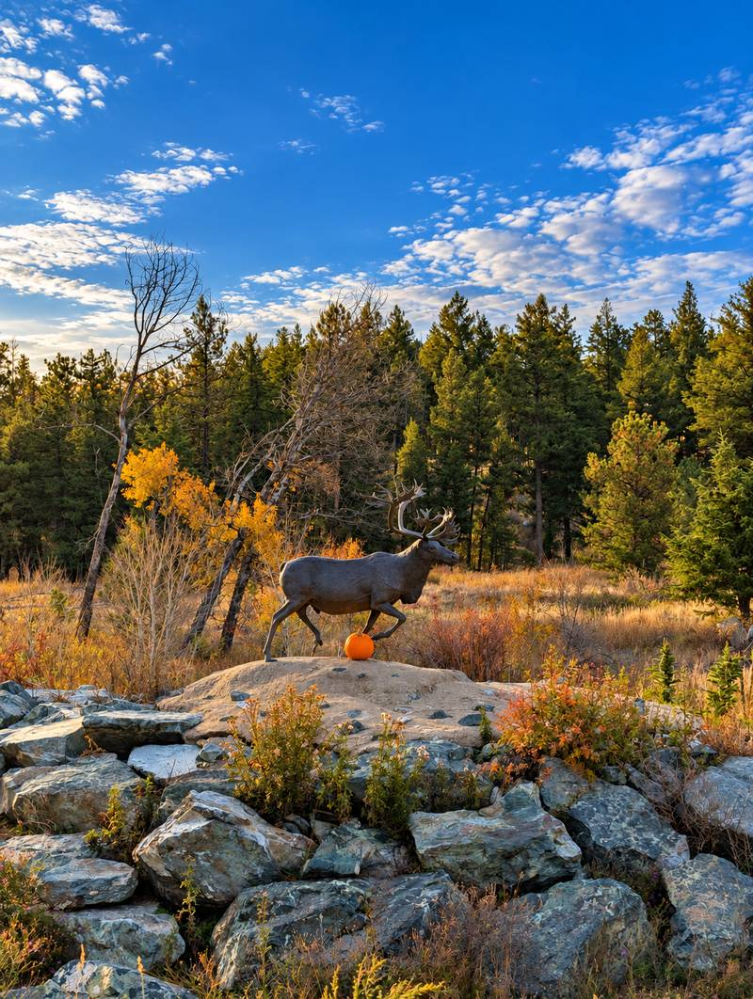
Raven Hill Rd
Raven statue on Raven Hill Rd
A raven statue perches on top of a stacked-rock pile in front of Raven Hill Rd, with tall ponderosa pines behind it.
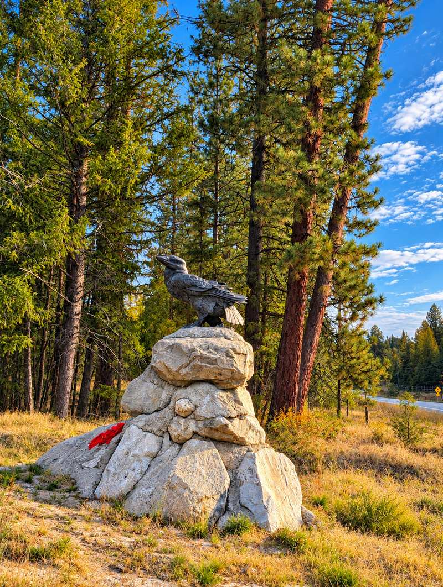
Wapiti Way
Elk statue on Wapiti Way
An elk statue with its head raised stands on a rock pile in front of Wapiti Way, with aspen and pine forest in fall colours behind it.
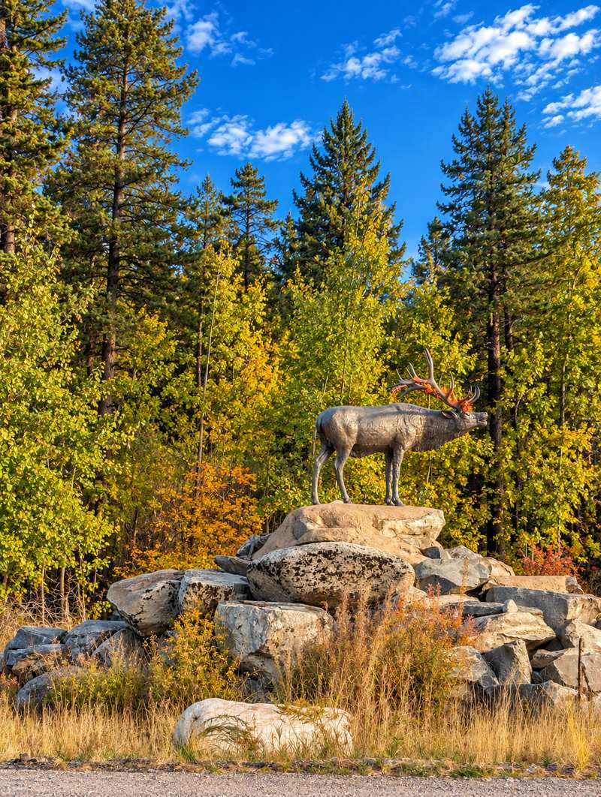
Anarchist Mountain statues: common questions
Where are the statues on Anarchist Mountain?
On Mule Deer Dr, Cougar Pl, Peregrine Dr (at the Regal Ridge entrance), Black Tail Rd, Sasquatch Trail, Eagle Point, Bullmoose Rd, Caribou Crescent, Raven Hill Rd and Wapiti Way.
What animals are the statues?
A deer, a cougar, eagles, a leaping buck, a sasquatch, a moose, a caribou, a raven and an elk.
Which statue is at the Regal Ridge entrance?
An eagle statue on a stacked-rock monument, on Peregrine Dr.
Considering a home on Anarchist Mountain?
Pat Miazga lives on Anarchist Mountain. Ask about specific streets, lots and what to check before you buy here.
Ask Pat about Anarchist Mountain homes